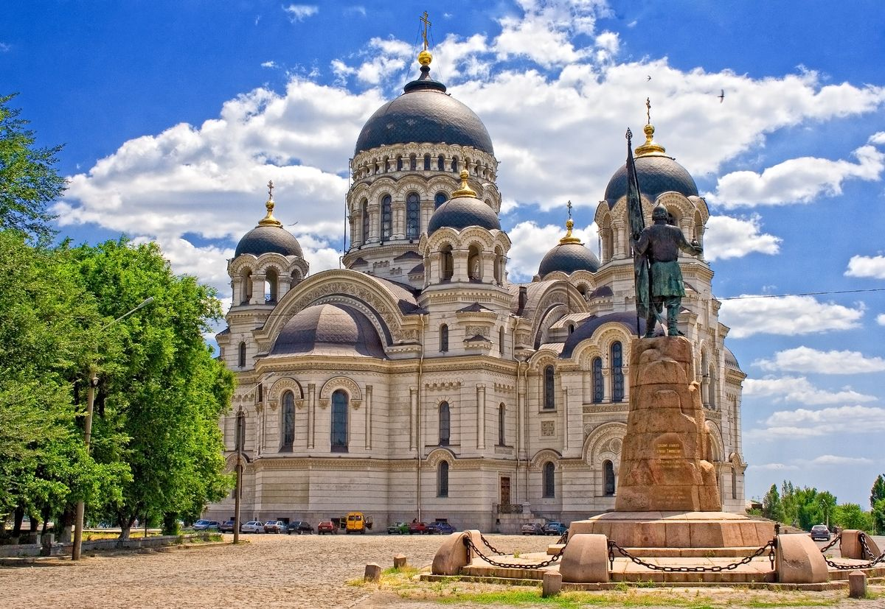
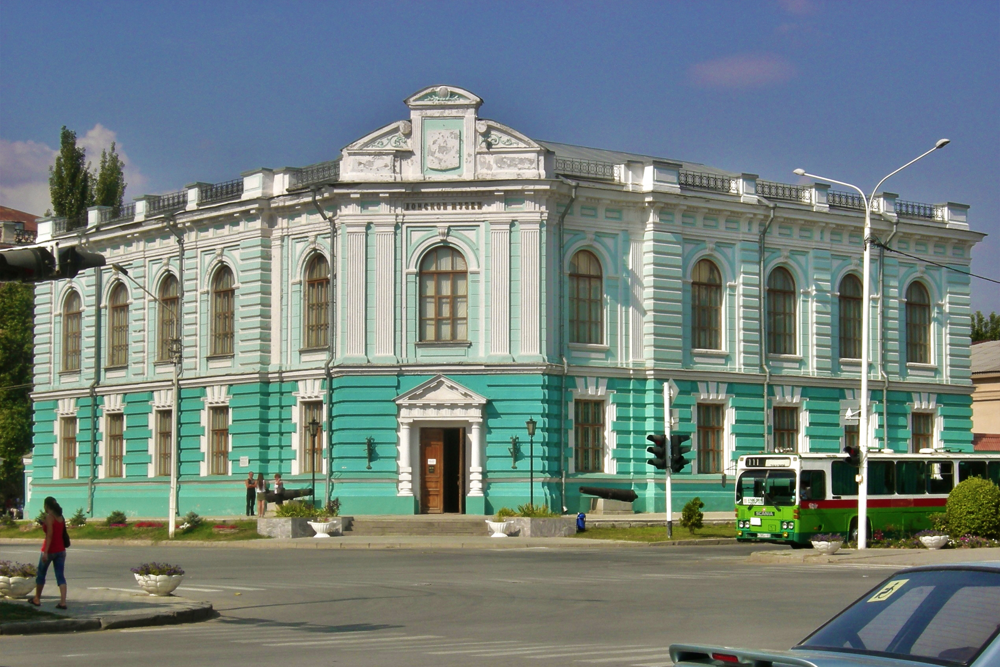
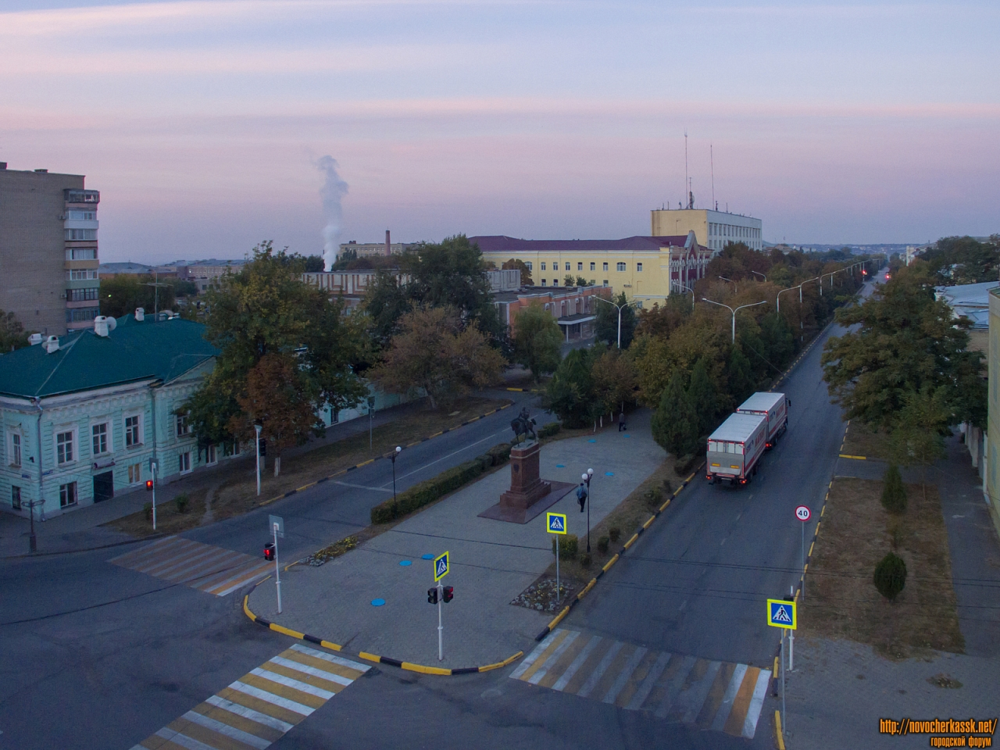

О городе Новочеркасск
Новочеркасск — столица Донского казачества, город с богатой историей и яркой культурой. Основан в 1805 году как новая столица Войска Донского. Город славится своим Вознесенским собором — одним из крупнейших в России, множеством казачьих памятников, музеями и уютной атмосферой.
Здесь пересекаются традиции казачества и современность, а жители гордятся своим наследием. В Новочеркасске регулярно проходят культурные мероприятия, парады, праздники, посвящённые казачьим традициям.
Интересные места
- Вознесенский собор — символ города и место казачьих церемоний.
- Платовский проспект — главная улица, идеальна для прогулок.
- Памятник Ермаку — одна из первых скульптур в честь казака-первопроходца.
- Казачий театр — культурный центр с уникальными постановками.
- Музей истории Донского казачества — погружение в быт и дух казаков.
Галерея


